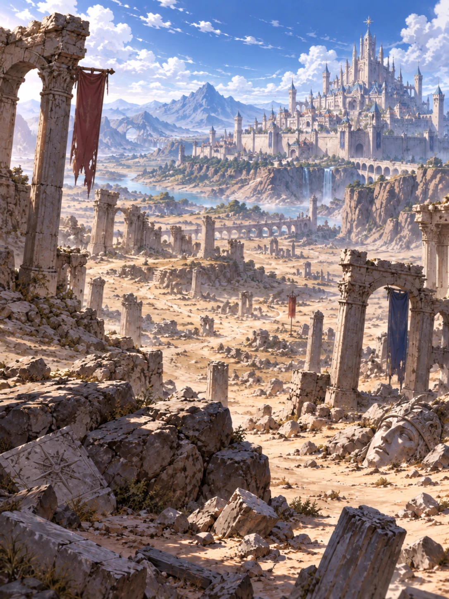
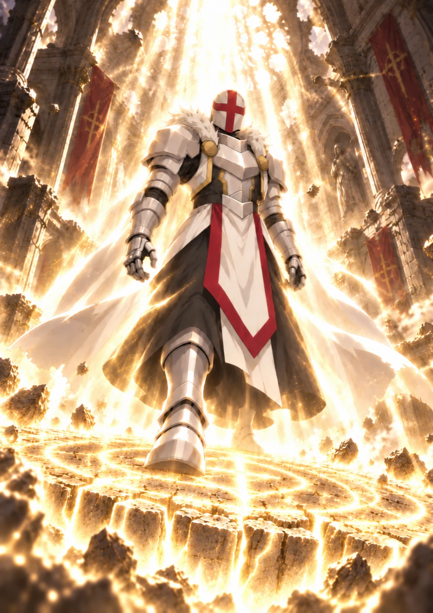

Volume One · Chapter One
The Seal
The first fireball missed Orin by the width of a bad decision.
Considering how many of those he had made today, that felt unfairly precise.
It screamed past his ear, close enough to curl the ends of his hair, and burst against the mouth of the alley ahead. Flame spread across the cobblestones in a clean red line. It did not touch the awnings. It did not catch the stacked baskets beside them. It simply rose into a wall exactly where Orin had meant to run.
He skidded so hard his patched boots smoked.
“Left!” Kisaya shouted.
“That’s a spice shop!”
“Then try not to season anything!”
She seized the back of his coat and dragged him through the open window.
Orin struck the sill with his hip, scattered three bowls of yellow powder, and discovered that turmeric hurt considerably more when inhaled at speed. A shopkeeper shrieked. Kisaya vaulted a counter. Orin followed through a cloud of gold, coughing apologies to everyone he collided with.
Behind them, a man’s voice cut through the chaos.
“City Wardens! Stand aside!”
That changed the screams.
People who had been angry became frightened. Shoppers pressed themselves against walls. A mother yanked her son beneath a table. The shopkeeper’s curses died so abruptly that Orin heard the clay scoop fall from his hand.
Black robes appeared in the window.
Orin ran faster.
He and Kisaya burst through a curtain of hanging peppers, shouldered out the rear door, and plunged into the noon crush of Bell Market. Canvas roofs turned the street into a patchwork tunnel of red and green. Merchants yelled prices over the bells from the western shrine. Porters fought for space with carts. The air smelled of hot oil, horse dung, river fish, and—thanks to Orin—enough turmeric to preserve a corpse.
There were hundreds of places to hide.
There were also hundreds of people who could get hurt.
“Toward the fountain,” Orin said.
Kisaya shot him a look as they ran. A loose strand of black hair was stuck across her mouth. “The fountain is an open square.”
“Exactly. They won’t throw spells into a crowd.”
“They just set a street on fire.”
“A very controlled fire.”
“Oh, good. We’re being responsibly hunted.”
Orin would have defended the distinction if a gust of wind had not lifted an entire vegetable stall into the air.
Turnips rained across Bell Market.
The stall crashed down behind them, blocking the street without crushing its owner. The spell had been measured to the finger. Orin knew enough theory to recognize the craft in it: compressed air, released in a rising spiral, its edge curved away from the crowd.
Only a licensed witch could shape wind so precisely.
That meant all three were still behind them.
The broad Warden with the iron-gray beard wielded fire. An iron-banded ashwood baton lay strapped across his back. The narrow one, whose face always seemed pinched by a bad smell, used ice. The woman wore no Warden’s silver chain, but the three black feathers at her collar marked her as a sanctioned witch.
Three elemental mages to catch two street orphans.
Orin hated that almost as much as the fireball.
“Why are they still chasing us?” he panted.
Kisaya ducked beneath a rack of copper pans. “Because asking them politely to stop didn’t work.”
“I mean, why us? We didn’t take anything.”
“We saw them take it.”
A black robe twisting in lamplight.
A man on his knees, one hand pressed to the dark stain spreading across his shirt.
Someone screaming for a healer.
The iron-gray Warden bending over him—not to help, but to pull something pale from inside his coat.
The memory struck Orin harder than the shop window had.
Then a brass plate spun past his head, and Bell Market returned all at once.
“That doesn’t prove they killed him,” Orin said.
Kisaya stared at him.
“He was bleeding,” she said.
“I noticed.”
“They were standing over him.”
“Also noticed.”
“I’m only saying we don’t know the whole story!”
Kisaya faced forward. “Then find a whole story in which innocent men do this.”
The fountain square opened ahead.
Sunlight flashed on white paving stones and the bronze statue at its center: Archmage Caldris, staff raised, one foot planted atop the broken chains of the old white tyrants. Water poured from the mouths of four stone salamanders around his pedestal. Children chased one another through the spray while their parents bargained at nearby stalls.
Orin saw the little girl before he saw the cart.
She had chased a red ball into the street. A driver, looking back at the commotion, did not notice her. His mule barreled forward, harness bells clanging.
Orin changed direction.
“Orin!” Kisaya snapped.
He reached the girl a breath before the cart. He caught her around the waist and threw both of them toward the fountain. A wheel clipped his heel. The world became white stone, blue sky, and pain.
The girl landed on top of him and drove the last of the air from his lungs.
Her eyes were huge. She still held the red ball.
“Are you a criminal?” she whispered.
“Apparently.” He pushed her toward her horrified father. “Don’t make it a career. The running is awful.”
Ice raced across the square.
People screamed as a silver-blue sheet swallowed the street between the fountain and the southern arcade. It climbed knee-high at the edges, smooth and seamless, cutting off the route without touching a single civilian.
The narrow Warden stepped from the crowd behind them, two fingers pressed together. Frost smoked from his sleeves.
“Enough,” he called. “Lie down with your hands where I can see them.”
The bearded fire mage entered from the opposite side. The witch climbed onto the roof of a bread stall, her cloak stirring though the air was still.
They had formed a triangle.
Orin’s heart sank.
Kisaya hauled him upright. “You chose an open square.”
“I know.”
“They have us boxed in.”
The bearded Warden extended one hand. His palm glowed red between leather straps.
“You two are witnesses in an official investigation. Come quietly, and no one needs to be injured.”
Orin wanted to believe him.
That was the worst part.
Wardens kept the river beasts from climbing the embankment each spring. Black mages burned rot from the grain stores and drove storm spirits out of the northern hills. When Orin had been six, a Warden had carried him three streets through a flood because he was too small to keep his feet.
Power needed rules. Rules needed people willing to enforce them.
So why had the first fireball passed close enough to burn his hair?
“If you only want answers,” Orin called, “we can speak here.”
The bearded man’s expression did not change. “On the ground.”
“In front of everyone.”
“Last warning.”
Kisaya’s grip tightened around Orin’s wrist.
She was not watching the bearded Warden. She was watching the witch.
The woman’s lips were moving.
Kisaya kicked the fountain’s nearest salamander squarely in the nose.
Its stone jaw cracked. Water erupted sideways just as the witch released her spell. Wind struck the spray and exploded it into a blinding silver curtain.
“Now!” Kisaya shouted.
They ran onto the ice.
Orin’s first step shot forward while his second remained behind. Pain tore through his hip.
Kisaya caught his collar before he fell.
“Short steps!” she said.
“I’m trying!”
They slid across the frozen street as fire hissed through the water behind them. Steam flooded the square. Orin hit the far side shoulder-first, scrambled over the icy ridge, and followed Kisaya into the southern arcade.
They left the crowded heart of the city behind.
The streets narrowed. Painted shopfronts gave way to brick warehouses and long dye sheds with shuttered windows. Midday bells faded beneath the slap of their footsteps. Here, the only witnesses were laundry lines, stray cats, and laborers sensible enough to vanish when they saw black robes.
Orin glanced back.
The three pursuers emerged from the steam.
They were no longer shouting warnings.
The witch moved first.
She swept both arms outward. Air folded down the alley like an invisible hammer.
Kisaya tackled Orin through an open gate. The spell struck the brick wall beside them. Mortar burst from its seams. A wooden door tore free and cartwheeled across the yard.
Orin landed face-first in a trough.
The water was purple.
He lifted his head, dripping dye. They had stopped pretending to care who got hurt.
Another impact shook the gate.
They ran between rows of drying cloth, purple water streaming from Orin’s sleeves. A worker pointed toward a low wall without being asked. Kisaya vaulted it. Orin attempted the same, caught his coat on a nail, and left a large piece of it behind.
On the other side lay the Ashward.
Even at noon, the district seemed to live in evening. Chimneys crowded out the sun. Tenements leaned over alleys barely wide enough for two people to pass. Orin and Kisaya knew those alleys better than any Warden did. They knew which courtyards connected, which doors were never locked, which roofs would bear a person’s weight and which only pretended.
For five minutes, that was enough.
They slipped through a cooper’s yard, crossed a laundry roof, descended a drainpipe, and doubled back beneath a covered bridge. Orin began to think they had lost the Wardens.
Then frost bloomed over the drainpipe above his hand.
“Move!”
The pipe shattered into glittering shards.
Orin dropped the last ten feet, hit a pile of old sacks, and rolled into a narrow lane. Kisaya landed beside him. At the far end, the bearded Warden stepped out from behind a chimney.
Fire burned around his fist.
Behind them, boots struck the covered bridge.
No stalls. No families. No little girls with red balls.
Nothing for the Wardens to protect from their own magic.
The bearded man punched the air.
A lance of flame tore down the lane.
Orin and Kisaya dove in opposite directions. Fire roared between them, struck the tenement wall, and blasted bricks into the room beyond. The building groaned. Somewhere inside, a woman screamed.
Orin stopped.
“There are people in there!”
The Warden formed another flame.
He had heard.
Of course he had heard.
“Orin.” Kisaya’s voice was low and urgent. “We can’t help them if we’re dead.”
“He could bring the whole building down.”
“And he will, whether you stand under it or not!”
She dragged him toward a passage between two coal stores. The second lance hit behind them. Heat slapped Orin’s back.
Something inside him, some carefully balanced shelf of explanations, began to tilt.
Perhaps the bearded man was corrupt. Perhaps the stolen object was dangerous. Perhaps the dying man had been a criminal. Perhaps the Wardens meant to question Orin and Kisaya, but panic had turned a lawful arrest into something uglier.
There had to be an explanation.
There had to be.
The trouble was that every explanation sounded more foolish when another fireball passed his head.
Kisaya led them south.
Orin realized it only when the tenements thinned and the city wall rose above the roofs.
“Kisaya, no. The south gate is sealed.”
“The gate is.”
Ahead, beyond a yard filled with broken carts, a crack divided the city wall from top to bottom. It had opened in last winter’s earthquake and been covered with a screen of iron bars while the masons repaired more important districts. Two of those bars had been sawed through near the ground.
Orin knew because Kisaya had sawed them.
“You said that was an emergency exit,” he gasped.
“This is an emergency.”
“The old ruins are on the other side.”
“Yes.”
“They are forbidden because they collapse.”
“So will the buildings behind us.”
She dropped to her stomach and wriggled beneath the bars.
Orin looked back.
The narrow ice mage appeared at the end of the yard. Frost crawled outward beneath his boots.
Orin dove for the gap.
Cold seized his ankle.
Ice locked around his boot and climbed toward his knee. Orin clawed at the dirt. Kisaya caught both his hands from the far side and pulled, but the spell held him like a chain.
The Warden approached without hurry.
“You have caused a remarkable amount of trouble,” he said.
Orin’s fingers slipped in Kisaya’s grasp.
“Don’t you dare,” she snarled—not at the Warden, but at Orin, as if being captured would be a personal betrayal.
She braced both feet against the wall and heaved.
Leather tore.
Orin slid through the gap, leaving his boot frozen to the ground behind him.
They fled beyond the wall.
The world changed.
Veyr ended as neatly as a line drawn with a ruler. On one side stood brick buildings, tiled roofs, and the black wall maintained by generations of earth mages. On the other, the land fell away into a vast, broken city that no living citizen claimed.
Pale towers leaned against one another like exhausted giants. Trees grew through shattered domes. Roads surfaced from the earth only to vanish beneath roots and slabs of fallen stone. Here and there, enormous archways still stood with nothing around them, framing pieces of empty sky.
No smoke rose. No bells rang.
Even the insects seemed reluctant to make noise.

Orin had seen the ruins from the wall all his life. Every child in Veyr had. Teachers called them the Last Foundation, remains of the age when white mages had ruled from palaces while common people starved below. The outer sections had been picked clean centuries ago. Everything deeper was unstable, cursed, or both.
A warning slab stood just beyond the crack.
By Decree of the Ninth Archmage, it read, entry is forbidden. The crimes beneath these stones are dead. Let them remain so.
Kisaya did not slow to read it.
They followed a sunken avenue between rows of faceless statues. Weeds clawed at Orin’s bare foot. His ankle throbbed, his lungs burned, and purple dye ran into his eyes whenever he blinked.
Kisaya looked almost as bad. Blood darkened one sleeve where flying brick had cut her. Her braid had come half undone. She was grinning.
Not because she found any of this funny, Orin knew.
Kisaya smiled at fear as if daring it to admit which of them was more frightened.
They climbed over the spine of a collapsed tower.
Behind them, metal groaned.
The fire mage melted the bars. One by one, the Wardens stepped through the wall.
They slowed when they saw the ruins.
The witch touched the feathers at her collar. The narrow man scanned the ancient towers. Even the bearded Warden’s fire dimmed.
“Maybe they won’t follow,” Orin whispered.
Kisaya studied their faces. “They will.”
They pressed deeper.
The avenue descended beneath a canopy of roots. Faded carvings covered the walls on either side—not the hooked runes Orin knew from modern spellwork, but circles nested within circles, crossed by impossibly fine lines. He wanted to stop. Even with three mages pursuing him, some stubborn part of his mind wanted charcoal and paper.
One symbol appeared again and again: an open hand within a many-rayed sun.
He had seen that sun before.
Lamplight shivering on a cellar wall.
The dying man clutching the iron-gray Warden’s sleeve.
“You don’t know what you’re taking,” he rasped.
The Warden struck him.
Something fell from the man’s hand—a disk of milk-pale stone, small enough to fit in a palm. A many-rayed sun gleamed across its face.
Kisaya’s fingers closed over Orin’s mouth before his shock could become a sound.
Three black-robed figures turned.
And the memory broke apart beneath a shout from the present.
“They’re heading for the Meridian!”
It was the witch. Her voice cracked across the ruins, stripped of every trace of authority.
What remained was fear.
The bearded Warden looked past Orin and Kisaya, toward the half-buried structure ahead. For the first time since the chase began, his face changed.
“Stop them!” he roared. “Now!”
Fire struck the avenue.
Not in front of the children.
At them.
Kisaya shoved Orin behind a fallen statue. Flame burst against its back and washed around the stone shoulders. Heat scorched Orin’s cheek. The statue split down the middle.
“Still think they want to ask questions?” Kisaya shouted.
Orin stared at the molten line cutting through the statue.
“No.”
They ran for the half-buried structure.
It might once have been a temple. Six white pillars held up the remains of a triangular roof, though earth swallowed the lower half of its doors. The many-rayed sun had been carved above the entrance, then hammered until only a few lines remained.
Wind shrieked behind them.
Orin threw himself through the tilted doorway. Kisaya followed. The spell hit the pillars.
Stone boomed like a giant drum.
A crack shot across the ceiling.
“Run,” Orin said.
The ceiling answered by dropping a block where he had been standing.
They scrambled into darkness.
The passage sloped downward between smooth white walls. Roots had broken through in thick knots. Each impact from outside shook dirt loose around them. Kisaya caught Orin when his bare foot slipped, then nearly pulled them both down as the entire corridor lurched.
Behind, the Wardens entered.
“No more wide spells!” the bearded man shouted.
“You’ve fractured the whole—” the narrow one began.
The rest vanished beneath a roar.
The outer chamber collapsed.
Dust punched through the passage. Orin felt the floor jump. Kisaya disappeared in the gray cloud, though her hand remained locked around his.
“Keep moving!” she coughed.
“I can’t see!”
They staggered forward while stone crashed behind them. The floor leveled out. For a few steps it felt solid again—broad fitted slabs beneath their feet, untouched by roots or weather.
Then one slab sank.
There was a small, almost polite click.
The floor disappeared.
They fell.
Orin struck stone, slid across a steep surface, and lost Kisaya’s hand. Darkness spun around him. His shoulder hit an edge. His head hit something worse. For a moment he was weightless again.
Then he landed on his back hard enough to drive every thought from his body.
Silence followed.
Not true silence. Pebbles pattered in the dark. Somewhere above, ancient masonry groaned. Orin tried to breathe and could not.
At last, air returned.
“Kisaya?”
Nothing.
Fear cut through his pain.
He rolled onto one elbow. The motion sent bright sparks across his vision. “Kisaya!”
“If you shout any louder,” a voice muttered nearby, “the ruins might notice us.”
Orin sagged.
“Are you hurt?”
“Yes.”
He crawled toward her voice. A weak shaft of daylight fell through the hole above, more dust than light, but it was enough to find Kisaya pinned beneath a broken slab. Only her coat was trapped. Orin pushed while she pulled her arm free.
She sat up, winced, and touched the back of her head. Orin checked her pupils. She pushed his hand aside, but he saw the tremor in her fingers.
They were at the edge of an enormous circular chamber.
That should not have been possible.
The ruins above had been split by trees and weather, but the chamber was whole. Its ceiling curved into darkness beyond the reach of the narrow light. Not one root pierced the white stone walls. Not one drop of groundwater stained them.
The air was cold and dry.
At the center stood a low stone platform.
Orin forgot his injuries.
Lines covered the floor around it. Thousands of them. They spread from the platform in concentric circles, crossed by geometric figures so exact that they seemed less carved than imagined into the stone. Pale metal filled the deepest grooves. Even beneath centuries of dust, it held a faint sheen.
It was a spell circle.
It had to be.
And it was larger than the city academy.
“Don’t touch anything,” Orin whispered.
Kisaya, who had been reaching toward the nearest line, withdrew her hand. “I was checking it.”
Orin crawled closer. He knew the eight elemental foundations. Every schoolchild did: the ascending triangle of flame, the broken spiral of wind, the descending hook of water, the branching path of lightning. Complex spells layered those forms together, but the roots never changed.
There were no elemental foundations here.
The central figures curved around empty spaces. Lines divided, returned, and joined themselves from directions that made his eyes ache. Along the outer ring, the open hand and many-rayed sun repeated between symbols he could not read.
“This isn’t black magic,” he said.
For once, Kisaya did not answer.
Orin brushed dust from one of the grooves. The metal beneath was almost white.
White.
He pulled his hand back.
Every child in Veyr learned the same lesson: before the Liberation, white mages had ruled from hidden halls, hoarding healing, enslaving the gifted, and forbidding common people from studying the elements. The first black archmages broke their rule, and most white magic died with it. What survived could close cuts, ease fevers, perhaps mend a bone.
It could not carve a spell circle across an entire chamber.
At least, no history Orin had read said it could.
Kisaya had gone still.
“Do you hear that?” she asked.
Voices drifted through the hole above.
The collapse had separated the Wardens from the children, but not for long. Boots scraped over broken stone. Someone coughed. A red glow flickered in the shaft as the fire mage brought light to his hand.
“They fell into the lower chamber,” said the narrow Warden.
The witch swore.
“Get them out,” the bearded man ordered.
“The passage won’t bear another spell.”
“Then climb.”
Orin searched the chamber walls.
No doors.
No stairs.
No second passage hidden behind the platform. The room was a perfect white bowl with one new hole in its ceiling and three people gathering around it.
Kisaya picked up a shard of stone the size of her hand.
“What are you going to do with that?” Orin asked.
“Make her duck.”
“They have fire, ice, and wind.”
“And we have no door.”
A rope dropped through the hole.
It uncoiled until its weighted end struck the floor just beyond the outermost ring. The witch appeared above, a black shape against the daylight. Wind spun around her free hand.
“Move away from the circle,” she called.
There was strain in her voice. Not anger. Not even urgency.
Terror.
Kisaya heard it too.
She looked at the platform, then back at the witch. “What is this place?”
“Move away.”
“What did you steal from that man?”
The firelight above flared.
“Kisaya,” Orin whispered.
“They didn’t chase us only because we saw a murder. Not all this way.” Her eyes dropped to the many-rayed sun beneath their feet. “What if they think we recognized the disk? What if they think we know what it opens?”
“You understand nothing,” the witch said.
“That’s what the dead man told you.”
For one second, no one moved.
Then the witch raised her hand.
Orin saw the spell forming. Air tightened around her fingers, bending the dust toward the hole. A small spell this time. Precise. Strong enough to seize a person and drag them upward.
Kisaya threw the rock.
The witch twisted aside. Her spell released crooked.
Wind struck the broken edge of the ceiling.
A sound like thunder rolled through the chamber.
“No!” the narrow Warden screamed.
The ceiling split.
The rope snapped sideways. The witch vanished from view. Above them, black-robed figures scrambled as a fracture raced across the underside of the ruins.
Orin seized Kisaya and ran.
There was nowhere to go except the center.
Stone began to fall.
Small pieces came first, bouncing across the spell circle. Then a block smashed into the outer ring and cracked in half. The pale metal flashed beneath it.
“Under the platform!” Orin shouted.
It was too low to hide beneath and too far away to reach. It was also the only cover in the chamber.
He and Kisaya dove as the chamber roof gave way.
A slab larger than a market cart tore free.
It struck the floor across three rings of the spell circle.
The impact threw Orin onto his side. Dust swallowed the chamber. Chips of white stone hissed past his face. Something struck the back of his head, and the world became a high, thin ringing.
Then everything stopped.
Orin waited for the next collapse.
It did not come.
Through the ringing, he heard Kisaya cough.
He lifted his head.
The great slab lay diagonally across the chamber. Beneath it, the carved lines had been crushed into a black wound. One fracture ran from the broken circle to the central platform.
For a moment, nothing happened.
“Orin,” Kisaya said.
A white point appeared inside the crack.
It was smaller than a candle flame. Colder, too—not in temperature, but in color, a white so pure that everything around it looked stained.
The point became a line.
Light raced through the damaged circle.
It split at each crossing and flooded outward in both directions, faster and faster, until the enormous design blazed beneath the dust. The many-rayed suns ignited one after another. The chamber trembled.
“We should move,” Orin whispered.
“Where?” Kisaya whispered back.
The platform cracked.
White radiance poured from its seams.
Above, the Wardens shouted to one another. Orin could not make out the words. The trembling deepened into a roar that filled his bones. Pebbles rose from the floor. Dust spiraled upward. Kisaya grabbed his arm, but even her grip seemed distant inside that impossible sound.
The central platform broke apart.
Light erupted.
It did not burn like the Warden’s fire. It did not strike like lightning or howl like wind. It simply arrived, vast and absolute, swallowing every shadow in the chamber.
A pillar of white tore upward through the ruined ceiling.
Stone vanished into its brilliance. The buried temple, the trees above it, the empty sky—everything disappeared behind a single blazing column that rose high enough for all of Veyr to see.
On the broken edge of the chamber, three black mages stared down in horror.
Orin could see their faces clearly now.
The narrow man’s mouth hung open. The witch had forgotten the wind gathered in her hands. The bearded Warden—the man who had chased them through half the city, thrown fire into homes, and walked into forbidden ruins without lowering his eyes—stumbled backward.
“Seal,” he breathed.
The word should have vanished beneath the roar.
Somehow, Orin heard it.
The light curled around the ruined platform. Something moved inside it.
At first Orin thought the circle had contained a beast. An ancient spirit, perhaps, or one of the monsters from the oldest academy texts. Something with too many limbs. Something the white tyrants had buried when they could not kill it.
The shape rose.
One foot settled on the fractured stone.
Then another.
It was a man.

He stood at the center of the shattered seal with his head bowed. Metallic glints shimmered around a face Orin could not see. A white cape and armored pieces adorned his body, untouched by the storm of radiance surrounding him.
Chains of light stretched from the broken circle to his wrists, his throat, his heart.
One by one, they came apart.
Not snapped.
Not torn.
They simply lost the shape that had made them chains.
Kisaya took a step backward.
She had stood in front of fire. She had thrown a rock at a witch. She had smiled while the city’s Wardens tried to kill them.
Now her hand shook against Orin’s arm.
He wanted to reassure her.
No words came.
The man looked neither large nor monstrous. He carried no staff. He wore no crown. Yet Orin felt, with the deep certainty of prey hearing a branch break in a silent forest, that they had not found safety beneath the ruins.
They had found the reason the ruins were forbidden.
The last chain dissolved.
The white light began to fade.
The man lifted his head.
And after centuries in darkness, the man opened his eyes.